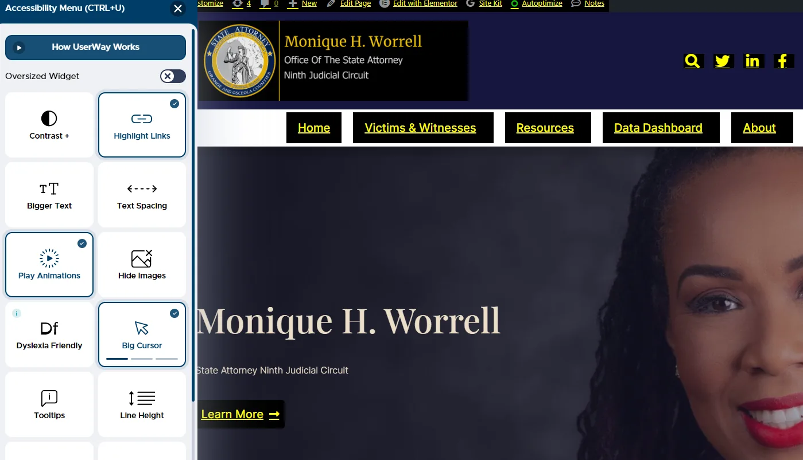

As I began the task of designing a new website for the Office of the State Attorney, my first priority was understanding its fundamental function. Previously the Office had a functional but outdated public website. Being such an important source of information for citizens of Central Florida, it was paramount that my design be user-friendly, accessible, and easy to navigate.
https://sao9th.com/
Website's Architecture
Once I understood my purpose, I focused on designing the website's architecture. This involved efficiently organizing content so users could easily locate their required information; I then developed an intuitive sitemap and navigation scheme so users could easily locate their desired information.
Choosing Elementor
Selecting Elementor as my design tool was an important and calculated decision. Elementor is a popular WordPress page builder that offers an efficient platform for building professional websites without needing extensive coding knowledge. Due to its flexibility, intuitive interface, extensive template library and customization features, and user-friendly design features - Elementor was an excellent fit for my project. In addition, its user-friendly nature enables other staff members to make updates or modifications easily without needing web development expertise, especially for a massive website such as sao9th.com.
The Process of Setting Up
As soon as I chose Elementor, I began creating the website. Starting with its basic layout, I selected a responsive template from Elementor's extensive library that reflected government identity before further customizing this template to match its purpose and branding elements.
A Primary Focus
At my government website design client, accessibility was of primary concern. To meet that goal, I took extra precautions in making the site ADA compliant and accessible for individuals with disabilities. With this approach in place, users with physical or mental limitations could navigate and access information with ease - this meant the design wasn't just aesthetics-driven but about inclusivity and accessibility as well.
Security and Compliance
Security was of utmost importance for this government website. I utilized the Host's built-in security features and enhanced them with top-rated plugins to ensure its resilience against potential cyber threats and ensured compliance with key regulations like GDPR to safeguard user data privacy.
The Importance of Constant Evaluation and Improvement
My job did not end once the website went live. I consistently used analytics tools to monitor its performance, identifying areas where improvement could occur and seeking feedback from users to make the site more responsive to their needs. Finally, I promoted an environment of continuous improvement through user testing sessions.
Conclusion
Designing sao9th.com using Elementor was both enjoyable and insightful. From understanding its purpose, choosing the ideal tool, setting up the site using Elementor, optimizing performance, and adopting continuous improvement practices - every step was an education in itself! Ultimately, the result was an effective website that effectively met its citizens' needs - underscoring Elementor's versatility and efficacy in website creation.
